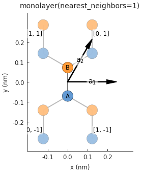
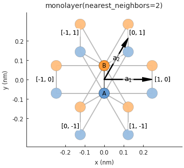
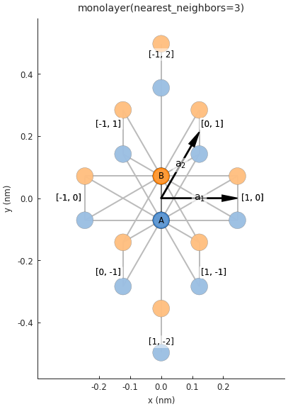
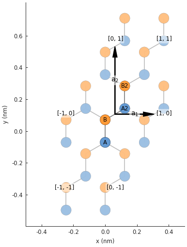

Graphene¶
Lattices¶
- monolayer(nearest_neighbors=1, onsite=(0, 0), **kwargs)¶
Monolayer graphene lattice up to
nearest_neighborshoppings- Parameters:
- nearest_neighborsint
Number of nearest neighbors to consider.
- onsiteTuple[float, float]
Onsite energy for sublattices A and B.
- **kwargs
Specify the hopping parameters
t,t_nnandt_nnn. If not given, the default values fromgraphene.constantswill be used.
  
- monolayer_4atom(onsite=(0, 0))¶
Nearest-neighbor with 4 atoms per unit cell: square lattice instead of oblique
- Parameters:
- onsiteTuple[float, float]
Onsite energy for sublattices A and B.

- bilayer(gamma3=False, gamma4=False, onsite=(0, 0, 0, 0))¶
Bilayer lattice in the AB-stacked form (Bernal-stacked)
\(\gamma_0\) is the single-layer hopping within the top layer (A1/B1) and bottom layer (A2/B2)
\(\gamma_1\) is the inter-layer hopping between B1 and A2 (where atom B1 lies directly over A2)
Hoppings \(\gamma_3\) and \(\gamma_4\) are optional (see parameters)
- Parameters:
- gamma3, gamma4bool
Enable \(\gamma_3\) and/or \(\gamma_4\) hoppings. By default, only \(\gamma_0\) and \(\gamma_1\) are active.
- onsiteTuple[float, float, float, float]
Onsite energy for A1, B1, A2, B2

Constants¶
- a = 0.24595¶
[nm] unit cell length
- a_cc = 0.142¶
[nm] carbon-carbon distance
- beta = 3.37¶
strain hopping modulation
- t = -2.8¶
[eV] nearest neighbor hopping
- t_nn = 0.1¶
[eV] next-nearest neighbor hopping
- vf = 906091185689731.9¶
[nm/s] Fermi velocity
Shapes¶
- hexagon_ac(side_width, lattice_offset=(-0.122975, 0))¶
A graphene-specific shape which guaranties armchair edges on all sides
- Parameters:
- side_widthfloat
Hexagon side width. It may be adjusted slightly to ensure armchair edges.
- lattice_offsetarray_like
Offset the lattice so a carbon hexagon is at the center of the shape. The default value is specific for
monolayer()andbilayer()lattices from this material repository.
Modifiers¶
- constant_magnetic_field(magnitude)¶
Constant magnetic field in the z-direction, perpendicular to the graphene plane
- Parameters:
- magnitudefloat
In units of Tesla.
- coulomb_potential(beta, cutoff_radius=0.0, offset=(0, 0, 0))¶
A Coulomb potential created by an impurity in graphene
- Parameters:
- betafloat
Charge of the impurity [unitless].
- cutoff_radiusfloat
Cut off the potential below this radius [nm].
- offset: array_like
Position of the charge.
- gaussian_bump(height, sigma, center=(0, 0))¶
Gaussian bump deformation
- Parameters:
- heightfloat
Height of the bump [nm].
- sigmafloat
Gaussian sigma parameter: controls the width of the bump [nm].
- centerarray_like
Position of the center of the bump.
- mass_term(delta)¶
Break sublattice symmetry, make massive Dirac electrons, open a band gap
Only for monolayer graphene.
- Parameters:
- deltafloat
Onsite energy +delta is added to sublattice ‘A’ and -delta to ‘B’.
- triaxial_strain(magnetic_field)¶
Triaxial strain corresponding to a homogeneous pseudo-magnetic field
- Parameters:
- magnetic_fieldfloat
Intensity of the pseudo-magnetic field to induce.